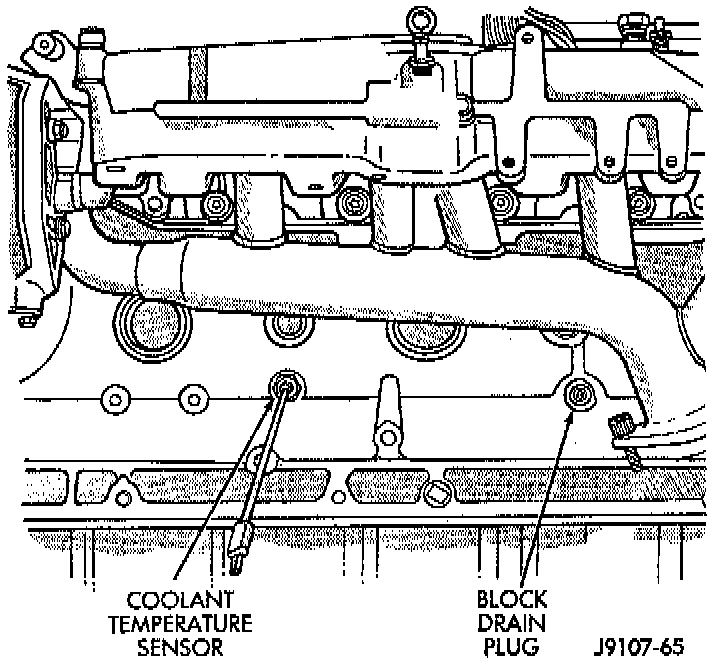

Draining

NOTE: DO NOT WASTE reusable coolant. If the solution is clean, drain the coolant into a clean container for reuse.
WARNING: DO NOT REMOVE THE CYLINDER BLOCK DRAIN PLUGS OR LOOSEN THE RADIATOR DRAINCOCK WITH SYSTEM HOT AND UNDER PRESSURE. SERIOUS BURNS FROM COOLANT CAN OCCUR.
NOTE: Use this procedure if the entire cooling system is to be drained, such as for engine removal.
DRAINING ENTIRE SYSTEM
1. DO NOT remove radiator cap first. With engine cold, raise vehicle on a hoist and locate radiator draincock. Radiator draincock is located on the right/lower side of radiator facing to rear of vehicle.
2. Attach one end of a hose to the draincock. Put the other end into a clean container. Open draincock and drain coolant from radiator. This will empty the coolant reserve/overflow tank. The coolant does not have to be removed from the tank unless the system is being refilled with a fresh mixture. When tank is empty, remove radiator cap and continue draining cooling system. To drain the engine of coolant, remove the cylinder block drain plug located on the side of cylinder block.
NOTE: Use this procedure if the coolant is to be partially drained, such as for engine thermostat removal.
PARTIAL DRAINING
1. With engine cold, slowly remove the radiator cap. Raise vehicle on a hoist and locate radiator draincock. Radiator draincock is located on the right/lower side of radiator facing to rear of vehicle.
2. Attach one end of a hose to the draincock. Put the other end into a clean container.
3. Open draincock and drain desired amount of coolant from radiator.